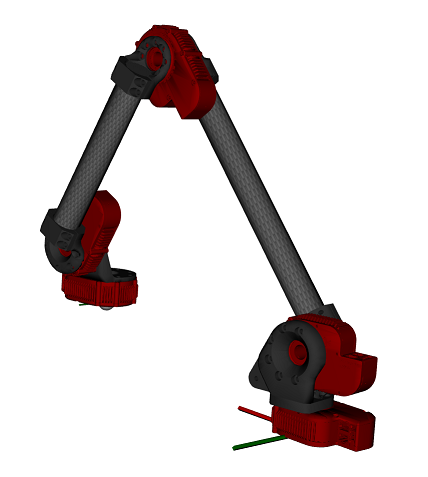

Contents
% This example shows howto use the HebiKinematics API to calculate forward % kinematics and Jacobians. % % Requirements: MATLAB 2013b or higher % % Author: Florian Enner % Created: 13 July, 2017 % API: hebi-matlab-1.0 % % Copyright 2017 HEBI Robotics
Define kinematic structure using HEBI components
The addBody method creates a serial chain of bodies that describe the kinematic relation of a robot. A 'body' can be a rigid link as well as a dynamic element. The first body represents the base and the last body represents the end-effector.
The following code creates a representation of the rendered 5-DoF arm shown below. For more information on the available parts, please consult the help files and/or the online documentation.

% Setup kin = HebiKinematics(); kin.addBody('X5-4'); % base joint kin.addBody('X5-HeavyBracket', 'mount', 'right-inside'); kin.addBody('X5-9'); kin.addBody('X5-Link', 'ext', 0.350, 'twist', pi); kin.addBody('X5-9'); kin.addBody('X5-Link', 'ext', 0.250, 'twist', pi); kin.addBody('X5-1'); kin.addBody('X5-LightBracket', 'mount', 'left'); kin.addBody('X5-1'); % Display display(kin);
kin =
<a href="matlab:helpPopup HebiKinematics">HebiKinematics</a> with properties:
numBodies: 9
numDoF: 5
mass: 2.7 [kg]
payload: 0 [kg]
body type isDoF mass
---- --------------- ----- -----
1 X5-4 true 0.335
2 X5-HeavyBracket false 0.215
3 X5-9 true 0.360
4 X5-Link false 0.400
5 X5-9 true 0.360
6 X5-Link false 0.300
7 X5-1 true 0.315
8 X5-LightBracket false 0.100
9 X5-1 true 0.315
Programmatically access body info
bodyInfo = kin.getBodyInfo(); display(bodyInfo);
bodyInfo =
9×4 table
body type isDoF mass
____ _________________ _____ _____
1 'X5-4' true 0.335
2 'X5-HeavyBracket' false 0.215
3 'X5-9' true 0.36
4 'X5-Link' false 0.4
5 'X5-9' true 0.36
6 'X5-Link' false 0.3
7 'X5-1' true 0.315
8 'X5-LightBracket' false 0.1
9 'X5-1' true 0.315
Programmatically access joint info
jointInfo = kin.getJointInfo(); display(jointInfo);
jointInfo =
5×6 table
body type mass positionLimit velocityLimit torqueLimit
____ ______ _____ _____________ ________________ ____________
1 'X5-4' 0.335 -Inf Inf -3.35 3.35 -7 7
3 'X5-9' 0.36 -Inf Inf -1.466 1.466 -13 13
5 'X5-9' 0.36 -Inf Inf -1.466 1.466 -13 13
7 'X5-1' 0.315 -Inf Inf -9.5 9.5 -2.5 2.5
9 'X5-1' 0.315 -Inf Inf -9.5 9.5 -2.5 2.5
Get Forward kinematics
While the HebiKinematics and the HebiGroup APIs were desigend to work well together, the HebiKinematics API is independent and can be used by itself. To keep these examples simple, we use pre-defined position vectors. In a real application, positions can be set to the group feedback.
% Input position vector (could be replaced with "position = fbk.position") position = rand(1, kin.getNumDoF); display(position); % 4x4xN transforms from the base frame to each output frames = kin.getForwardKinematics('output', position); % 4x4 transform from the base frame to the end-effector endEffector = kin.getForwardKinematicsEndEffector(position); display(endEffector);
position =
0.7513 0.2551 0.5060 0.6991 0.8909
endEffector =
-0.1167 -0.9413 -0.3167 0.4342
0.9551 -0.0189 -0.2958 0.3391
0.2725 -0.3370 0.9012 0.1790
0 0 0 1.0000
Get Jacobian
The calls to get the Jacobian work the same way as the forward kinematics.
% 6x numDoF x numBodies matrix J = kin.getJacobian('output', position); % 6 x numDoF matrix J_endEffector = kin.getJacobianEndEffector(position); display(J_endEffector);
J_endEffector =
-0.3391 -0.0680 0.0034 -0.0488 0
0.4342 -0.0635 0.0032 -0.0456 0
0 0.5488 -0.2101 -0.0321 0
0.0000 0.6826 -0.6826 0.6826 -0.3167
-0.0000 -0.7308 0.7308 -0.7308 -0.2958
1.0000 0.0000 0.0000 -0.0000 0.9012